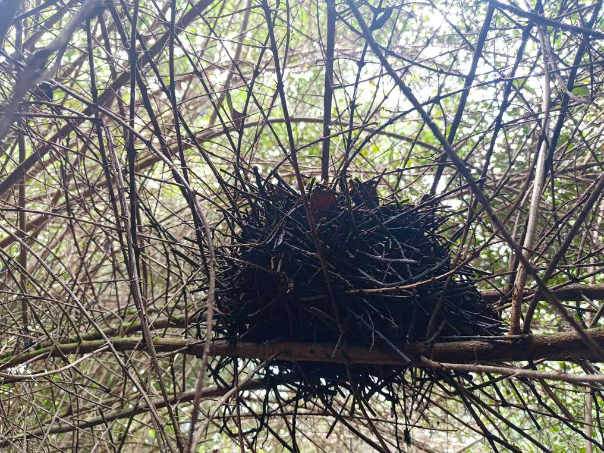
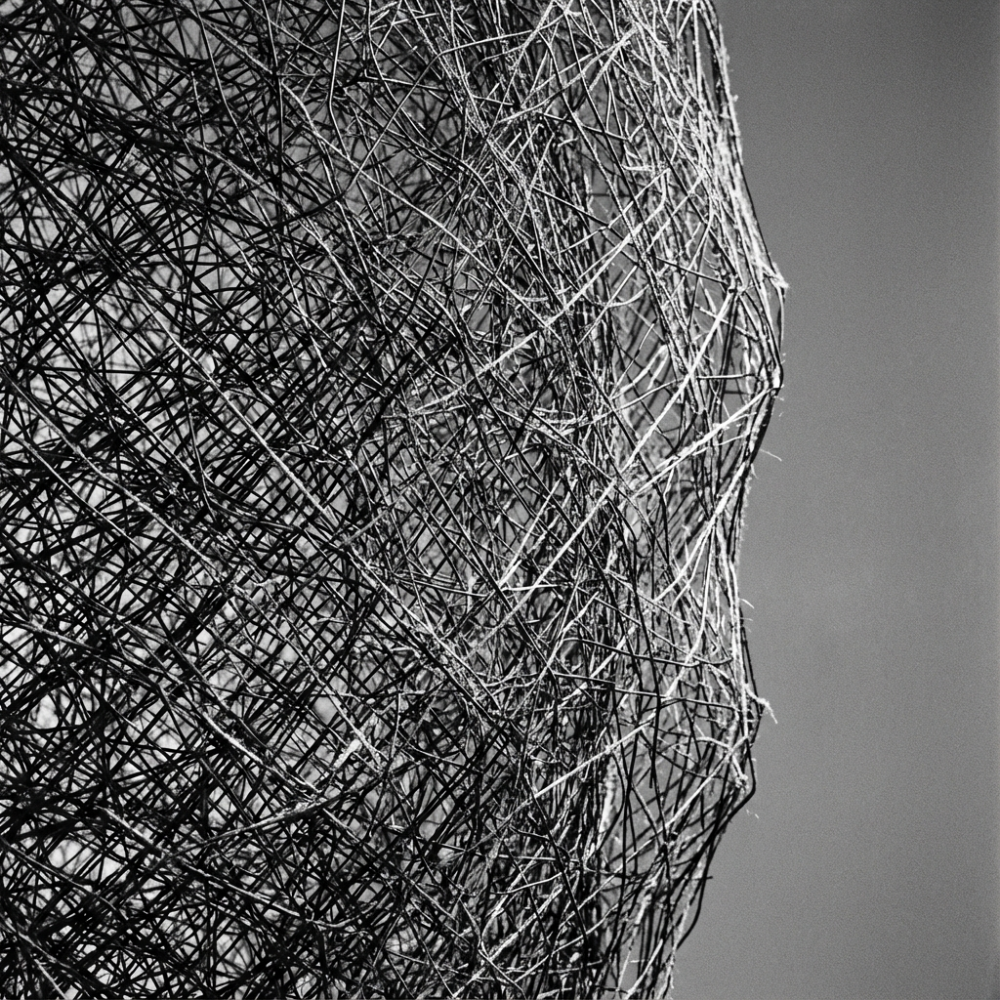
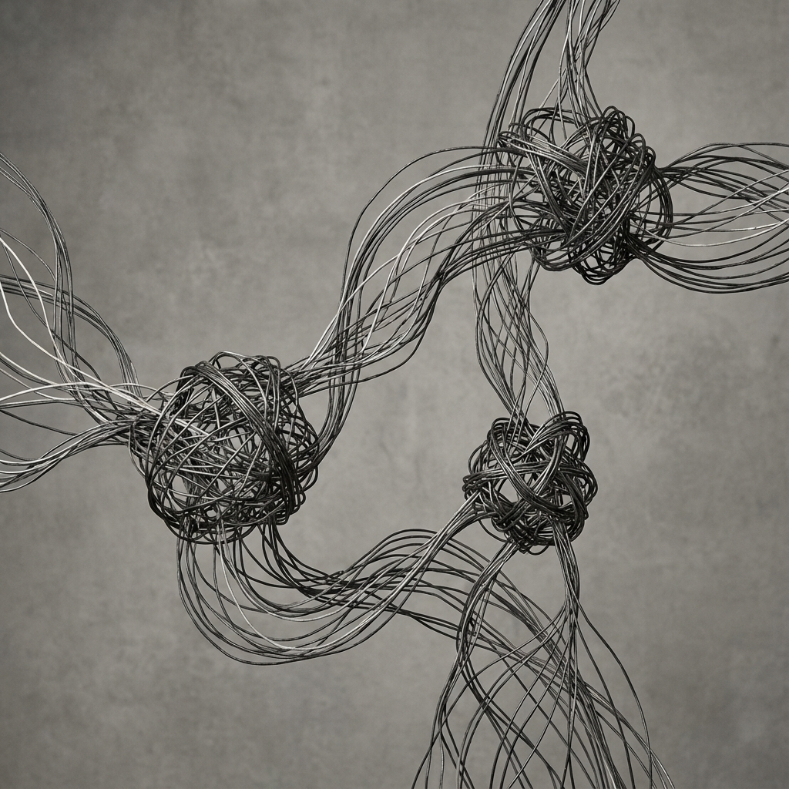

Perspectiva filosófica

Nuestra aproximación se fundamenta en la noción de dwelling de Tim Ingold, quien propone que los organismos y su entorno no son entidades separadas que interactúan, sino conjuntos de trayectorias —líneas de vida— que se despliegan unas a través de otras formando entanglements.
En este laboratorio, la Estructura Ecológica Principal de Bogotá deja de ser una capa cartográfica estática para revelarse como un meshwork: un entramado dinámico de movimientos, huellas y relaciones en constante devenir.

